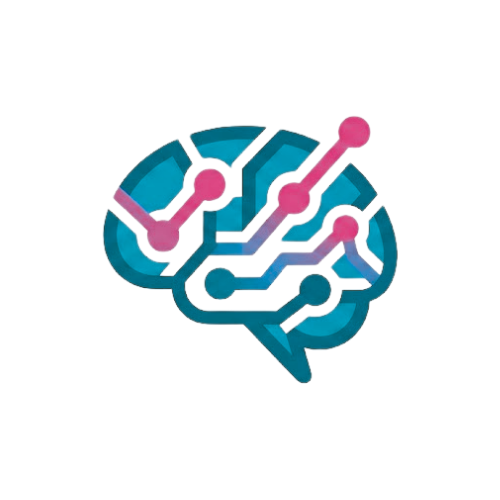
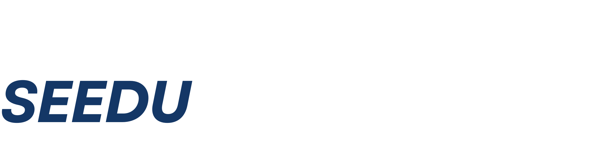
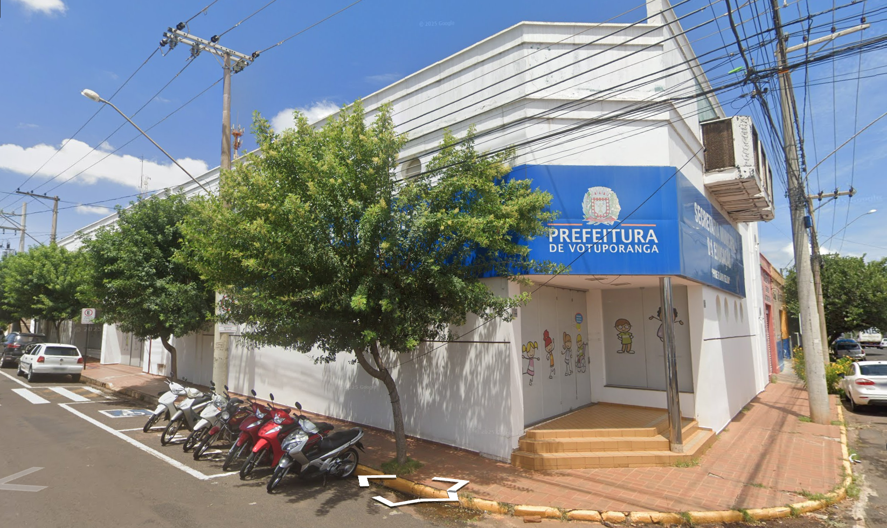
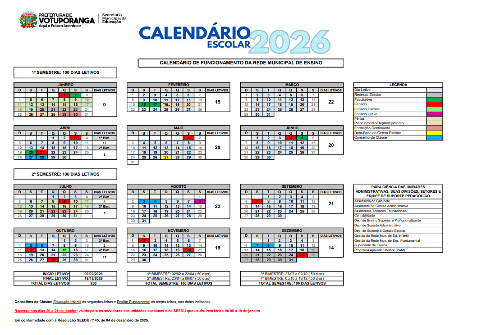

Impressora
Instalação, configuração na rede, contador de páginas e impressão.
Ver manuais


Tudo que sua equipe escolar precisa em um só lugar: tutoriais, ramais, calendário e sistemas da rede municipal.
Instalação, configuração na rede, contador de páginas e impressão.
Ver manuaisVisualização ao vivo, busca por gravações e exportação no SIM Next.
Acessar guiaChamados técnicos, memorandos e solicitações recorrentes da rede.
Ver tutoriaisClique para ampliar ou baixar o PDF oficial.

Atalhos rápidos do Windows para o dia a dia.
Acesso rápido aos serviços mais usados.
Escolha um tutorial ao lado para carregar o conteúdo.